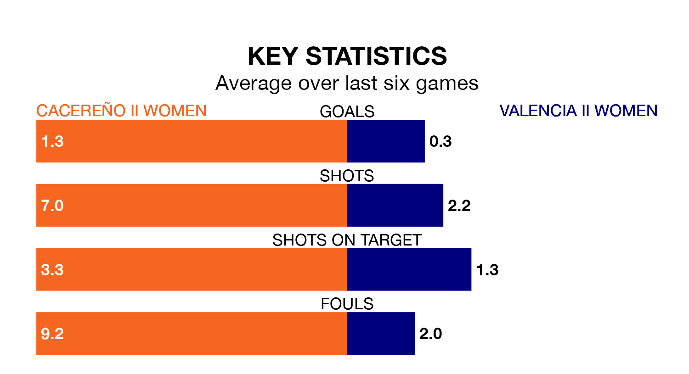

Valencia II Women travel for Sunday's match against Cacereño II Women looking to bounce back from defeat last time out in Segunda Federación Femenina.
Valencia II, who sit zero in the league after 17 games, fell to a 1-0 home defeat to CFF Albacete on January 20.
They face a Cacereño II side who picked up a win in their last match, a 2-0 victory against CD Getafe Women, and who sit 16th in the table.
Cacereño II are in disappointing form in Segunda Federación Femenina, with two wins and four losses from their last six games.
With a win and two draws over that period, Valencia II's form is slightly worse – they have taken five points from 18, compared to the hosts' six.
With 19 goals in 17 games so far this season, the away side are the league's joint--3th-lowest scorers with 1.1 goals per game. And they are conceding more than average, letting in 24 goals at a rate of 1.4 per game.
Cacereño II are also below average scorers, with 1.2 goals per game, compared to a league average of 1.3. They have conceded 1.5 goals per game.
Updated: 09:18 (UTC), 23/01/24